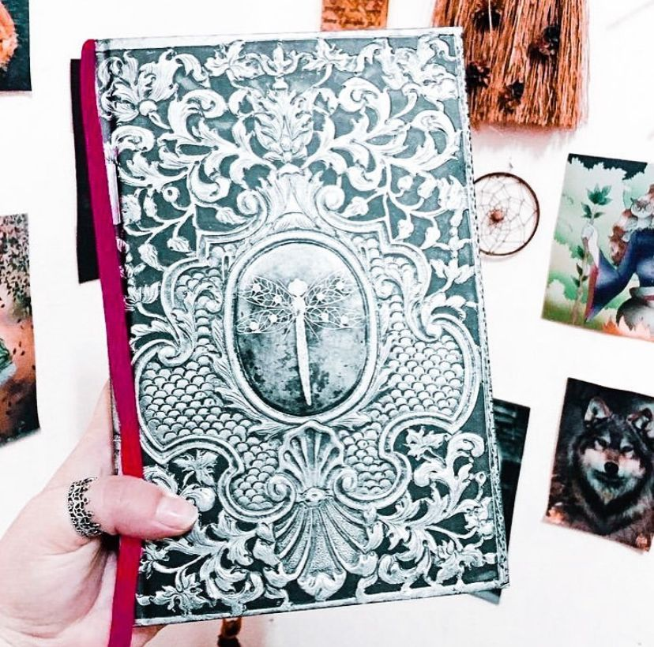

A Menina Submersa: memórias
(Caitlín R. Kiernan)
⭐⭐⭐
"Quer dizer, se é que essa conversa aconteceu. Quase parece que sim, mas um monte de lembranças minhas são falsas, por isso nunca posso ter certeza, de um jeito ou de outro. Muitas das minhas lembranças mais interessantes parecem nunca ter acontecido.”
Um verdadeiro conto de fadas, uma história de fantasmas habitada por sereias e licantropos. Mas antes de tudo uma grande história de amor construída como um quebra-cabeça pós-moderno, uma viagem através do labirinto de uma crescente doença mental. Um romance repleto de camadas, mitos e mistério, beleza e horror, em um fluxo de arquétipos que desafiam a primazia do “real” sobre o “verdadeiro” e resultam em uma das mais poderosas fantasias dark dos últimos anos. Considerado uma “obra-prima do terror” da nova geração, o romance é repleto de elementos de realismo mágico e foi indicado a mais de cinco prêmios de literatura fantástica, e vencedor do importante Bram Stoker Awards 2013.
”A normalidade é um comprimido amargo do qual reclamamos.”